Stage — La Poste
Technicien Data · Branche Services Courrier Colis · 3 sites en Seine-Saint-Denis · Avr–Juin 2026
Systèmes d'Information (SI) utilisés
Application interne de cartographie des Points de Distribution (PDI) et Points de Remise (PRE). Outil de référence pour décrire, organiser et fiabiliser toutes les adresses desservies par La Poste et leurs particularités.
Référentiel clients de La Poste regroupant tous les clients avec des prestations particulières. Utilisé pour extraire des données de production et alimenter les dashboards Excel pour le suivi du trafic et la détection d'anomalies.
SI qui répertorie l'organisation des tournées des facteurs générées depuis Georoute. Utilisé pour exporter les données de tournées et alimenter d'autres systèmes d'information internes.
Outils externes de cartographie pour vérifier visuellement la réalité du terrain quand GeoPaD ne suffit pas. Street View pour confirmer la présence et la localisation des boîtes aux lettres.
Mission 1 — Contrôle géographique & correction d'anomalies
Identification et correction des anomalies de distribution via GeoPaD et Google Earth : vérification des BAL hors-norme, incohérences PDI/BAL, accès privés mal référencés, mise à jour des SI.
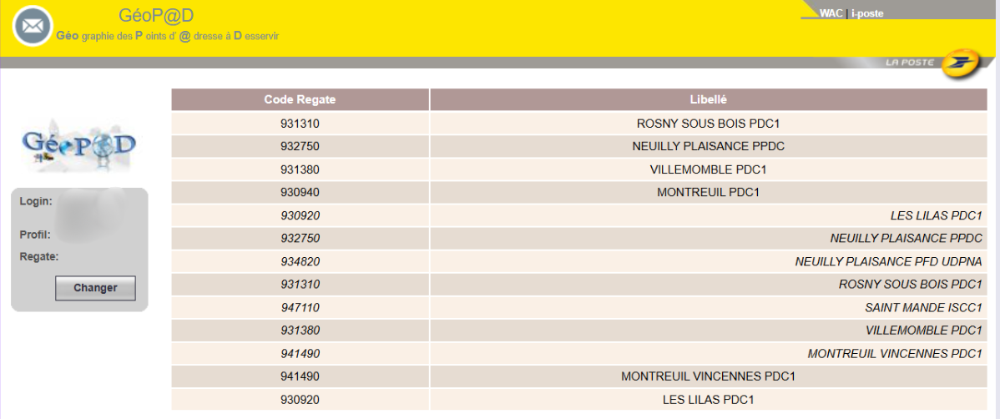
1. Choix de la Plaque (commune PDC)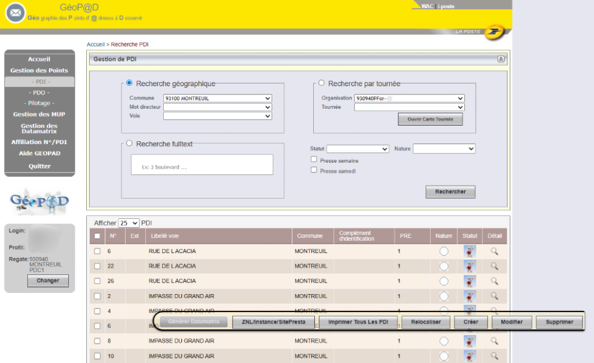
2. Saisie du mot directeur de voie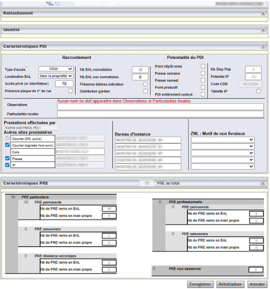
3. Fiche détail du PDIOn commence par sélectionner la commune PDC (appelée "Plaque" — plusieurs communes peuvent y être rattachées), puis on saisit le mot directeur de la rue ou avenue pour filtrer les adresses. On descend jusqu'au numéro recherché et on ouvre la fiche détail pour consulter toutes les informations : distance déclarée, type d'accès, commentaires facteur, etc.
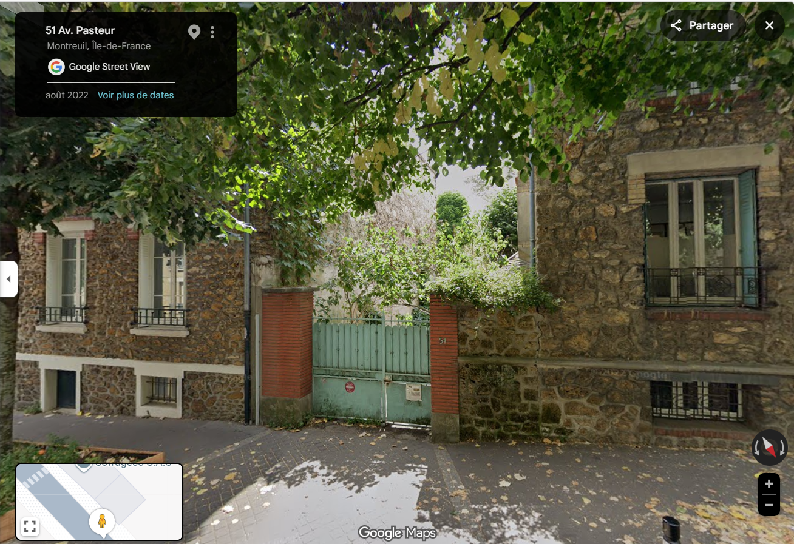
PDI sans tracé — BAL accessible voirie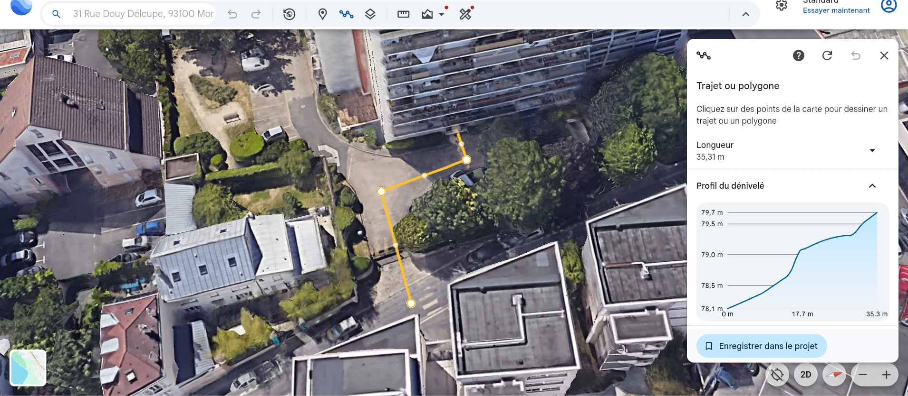
PDI avec tracé — mesure obligatoire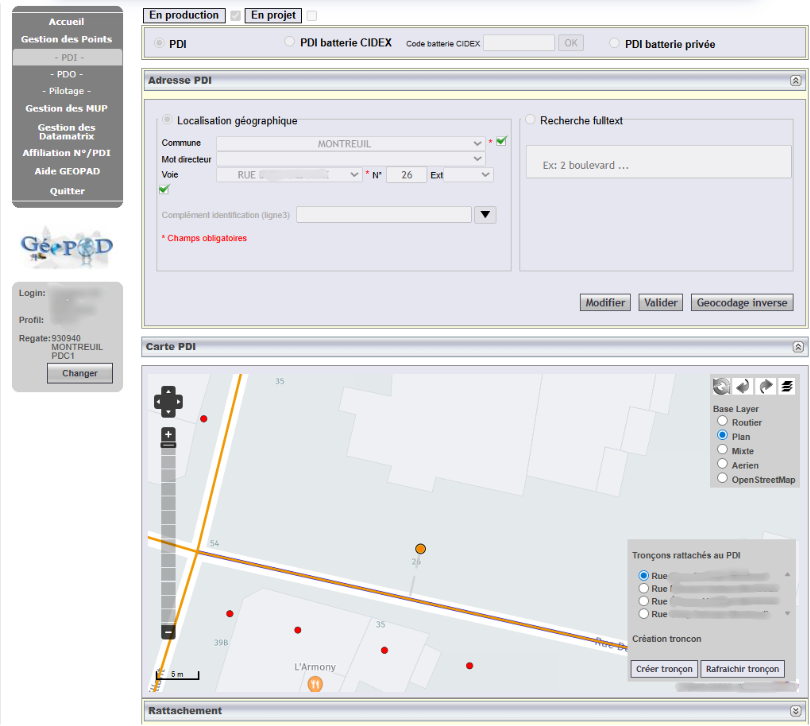
Vue carto — repositionner le PDIQuand la BAL est clairement visible en bord de route (pas de chemin à parcourir), on déclare l'accès "accessible voirie" à 0 mètre sans mesurer — l'erreur est évidente. Pour les cas avec tracé ou accès privé, la distance doit être mesurée sur Google Earth et comparée à la valeur renseignée. La vue cartographique permet également de repositionner le point orange (PDI) s'il est mal placé, ce qui est plus précis que Google Maps pour les adresses complexes.
Mission 2 — Analyse de données & Reporting Excel
Production de fiches d'identité site, dashboards de trafic comparatifs 2025/2026, plans de production quadri-mensuels et bulletins d'itinéraires — tout en Excel avec macros et mises en forme conditionnelles.
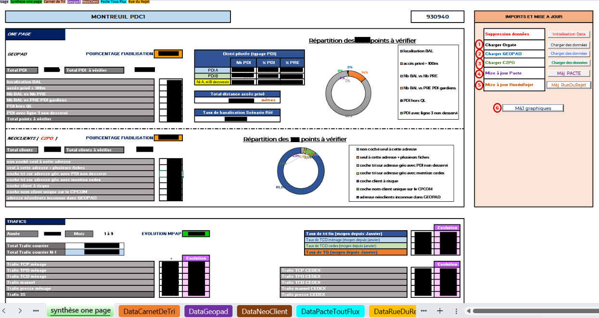
Synthèse one page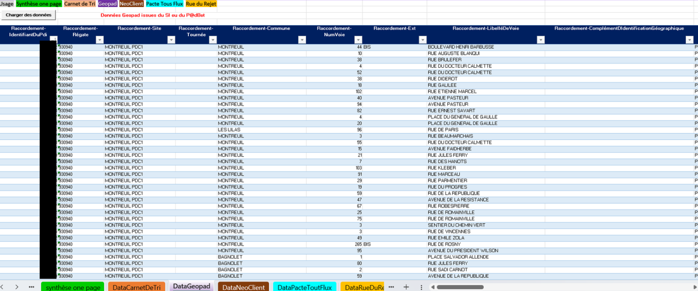
Indicateurs GeoPaD par anomalie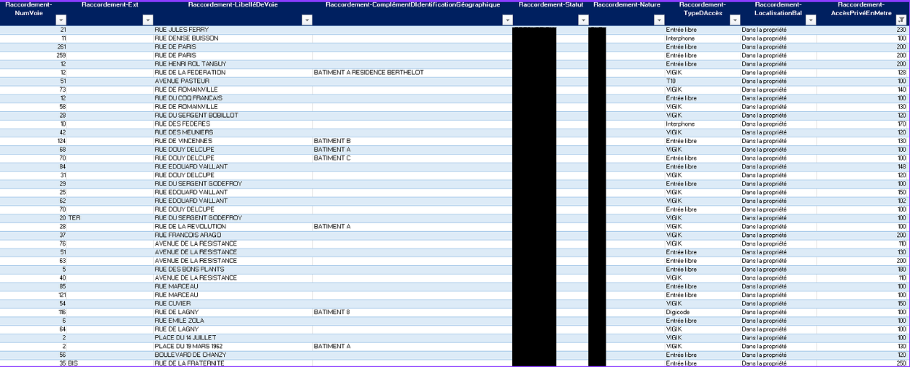
Filtre sur un indicateur d'anomalieLe classeur s'alimente automatiquement depuis les 3 fichiers CSV importés. La synthèse one page donne une vue d'ensemble du taux de fiabilisation. On peut ensuite filtrer la colonne d'un indicateur précis (par exemple "Accès privés > 100m") pour n'afficher que les adresses concernées et les traiter directement dans GeoPaD.
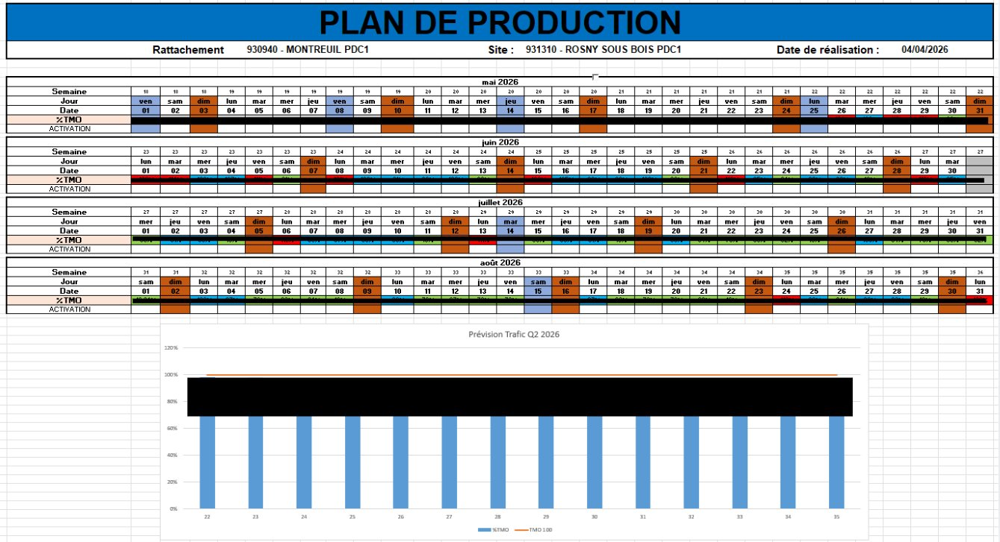
Plan de production Q2 2026 — site Rosny-sous-BoisChaque cellule représente un jour du quadrimestre avec son %TMO (taux de trafic moyen opérationnel prévu). Le vert indique un trafic faible, le bleu la zone idéale de charge, le rouge un trafic élevé nécessitant des ressources supplémentaires. L'histogramme en dessous donne la vision hebdomadaire avec la ligne TMO 100 en référence.
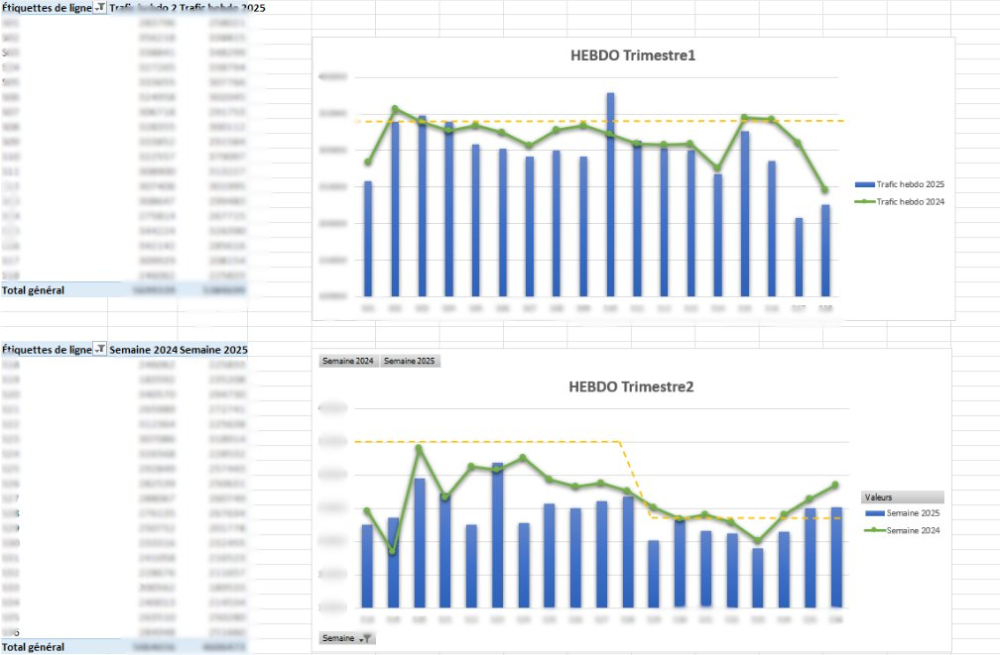
Trafic hebdo — comparaison 2024 vs 2025 par trimestrePour chaque trimestre, un graphique compare le volume de courrier traité semaine par semaine entre 2024 (courbe verte) et 2025 (barres bleues). La ligne pointillée indique le niveau de référence. Ce dashboard aide les responsables à visualiser les baisses de trafic et à ajuster l'organisation des tournées en conséquence.
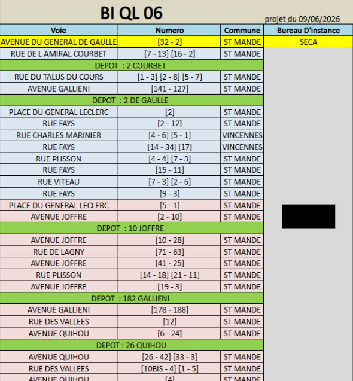
Exemple de bulletin d'itinéraire facteurLe bulletin d'itinéraire est le document de référence du facteur pour sa tournée. Il liste dans l'ordre exact chaque point de remise : nom de la voie, numéro, sens de desserte, et toute précision utile (code d'accès, étage, instructions particulières). Sa mise en forme suit un standard La Poste strict et doit être parfaitement lisible sur le terrain.
Mission 3 — Automatisation VBA : de 1 journée à 1 heure
Développement d'une macro VBA pour automatiser la mise en forme d'un classeur Excel à ~20 feuilles généré par un SI interne — gain de temps : d'une journée entière à environ 1 heure.
Une partie du reporting consistait à générer un classeur Excel via un SI interne (PDV IP), à partir de fichiers importés manuellement. Le classeur produit contient une vingtaine de feuilles, chacune nécessitant une mise en forme précise : couleurs de cellules, bordures, masquage de colonnes et lignes, ajustements de visibilité. Ce travail feuille par feuille prenait environ une journée entière à chaque génération.
En cherchant comment optimiser ce processus, j'ai développé une macro VBA qui applique automatiquement toutes les règles de formatage sur l'ensemble des feuilles en quelques secondes. Résultat : on passe d'une journée entière à environ 1 heure — un vrai gain opérationnel pour l'équipe.
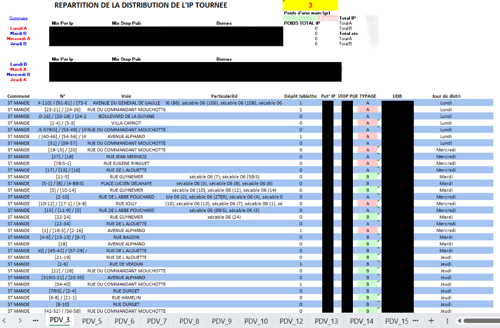
Export brut — données non formatées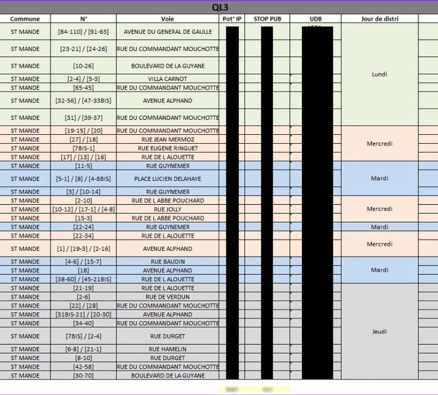
Après macro — mise en forme automatique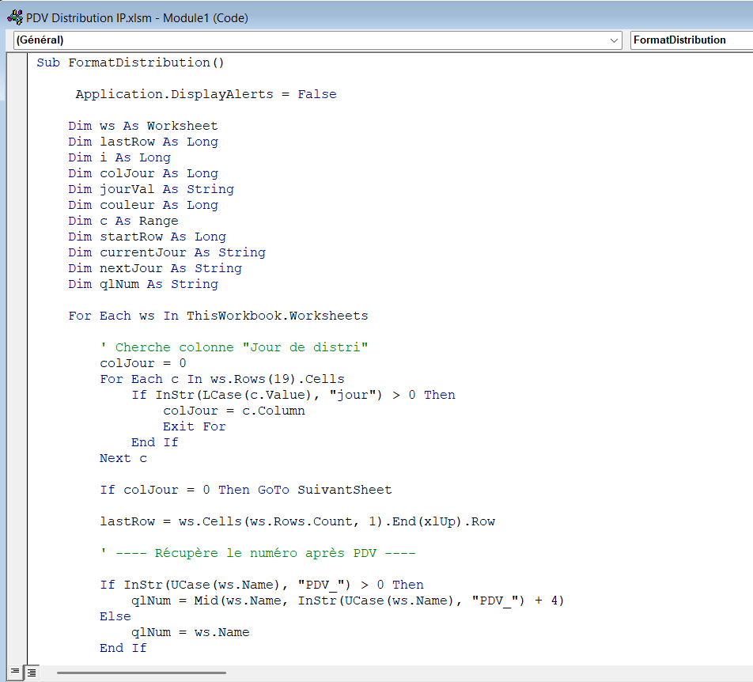
Code de la macro VBALe classeur brut sorti du SI est illisible : données entassées, colonnes inutiles ouvertes, aucun code couleur. La macro applique en quelques secondes la mise en forme complète sur toutes les feuilles simultanément, rendant le classeur directement exploitable par l'équipe opérationnelle.
C2PO est utilisé en parallèle de la génération du classeur PDV IP : il sert à extraire les données clients d'une commune pour les importer dans d'autres SI ou dashboards.
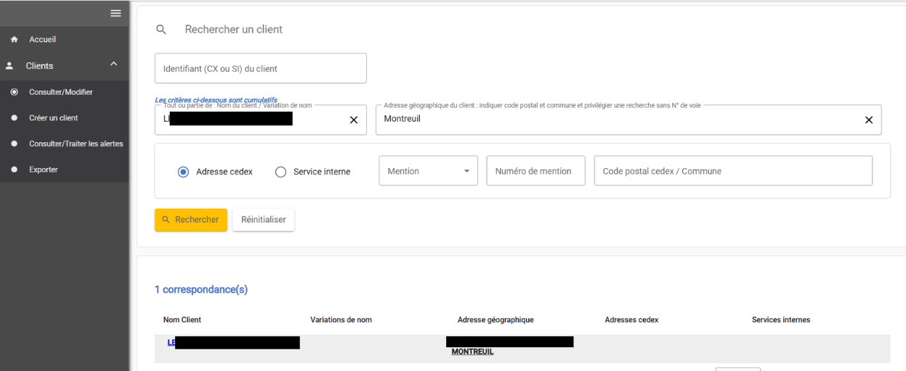
Recherche d'un client par nom / commune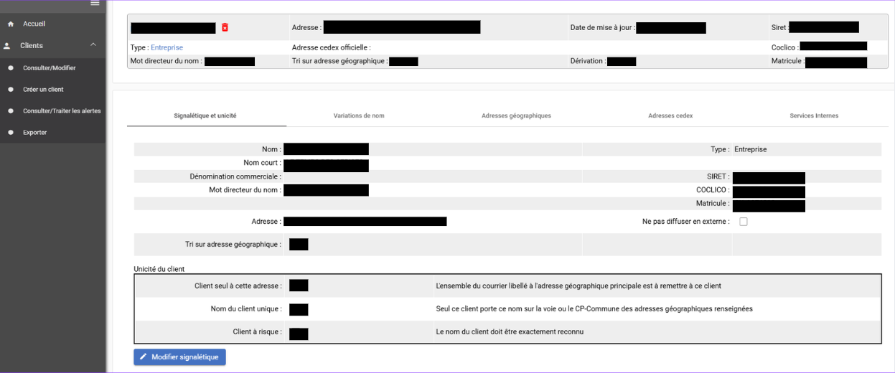
Fiche détail client — consultation & modification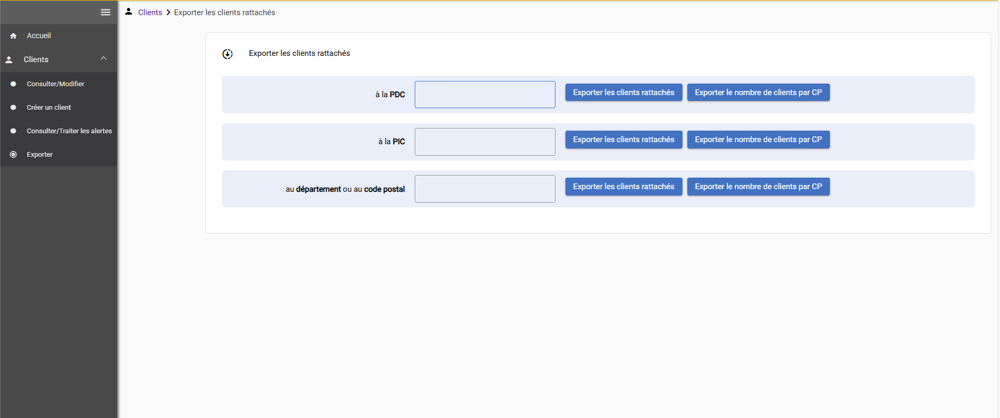
Export CSV de tous les clients d'une communeOn peut chercher un client par son nom et sa commune, ou directement par identifiant. Le résultat s'affiche en bleu en bas de page avec l'adresse. La fiche détail permet de consulter et modifier toutes les informations. L'export communal génère un CSV complet de tous les clients d'une commune, utilisable dans d'autres SI ou classeurs Excel.
Progression & Autonomie
Les premiers jours étaient centrés sur l'observation et la formation aux applications internes. Ma tutrice me formait aux SI, je reproduisais et comprenais progressivement. Petit à petit, j'ai gagné en autonomie jusqu'à être capable d'exécuter certaines tâches sans aucune question — ma tutrice n'avait plus qu'à m'indiquer le travail à faire.
Entreprise
Groupe public français, leader dans la distribution de courrier et de colis. La Branche Services Courrier Colis gère l'acheminement et la distribution sur l'ensemble du territoire national.
Compétences BUT ciblées
🗄️ Traiter📈 Valoriser
⚙️ Développer